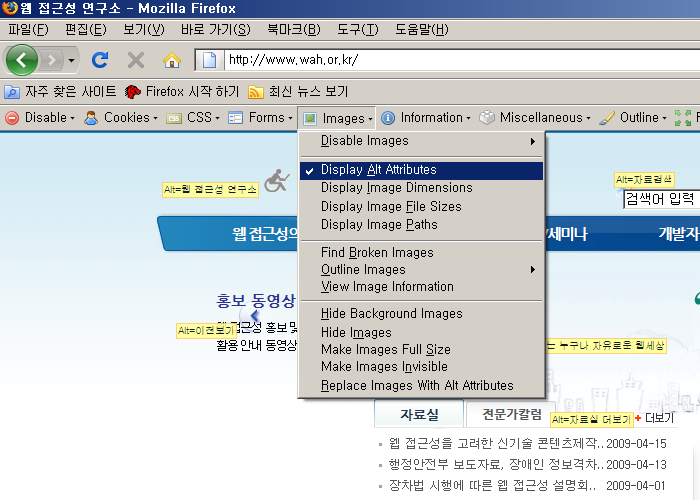

점검 방법 및 준수/위반 사례
이전
목차
다음
파이어폭스 + 부가기능 Web Developer 툴바
1-1. 텍스트 아닌 콘텐츠의 인식
점검 가능 지표
이미지의 의미나 목적을 이해할 수 있도록 적절한 대체 텍스트를 제공해야 한다.
※ 의미가 있는 이미지의 경우 대체 텍스트를 의미나 기능이 동일하게 제공
※ 의미가 없는 이미지의 경우 대체 텍스트를 blank(alt="")로 제공
점검 방법 설명
파이어폭스 [도구]-[Web Developer]-[Images]-[Display Alt Attributes] 를 선택하면
이미지의 alt 속성을 보여준다.
